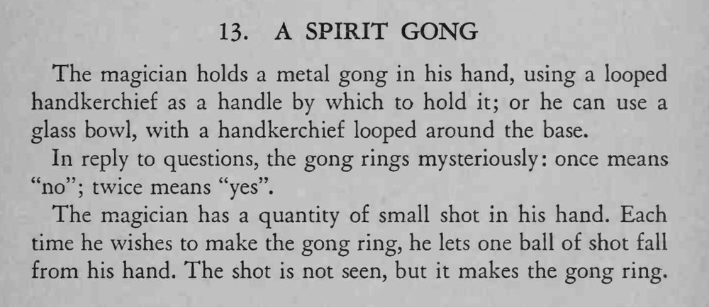

魔术师用手帕拎着一面铜锣，向「灵体」提问时，锣会按约定自己响一声或两声作答。
铅弹要小而沉，落点选在锣面正中，声音才清脆可信。

The magician holds a metal gong in his hand, using a looped handkerchief as a handle by which to hold it; or he can use a glass bowl, with a handkerchief looped around the base. In reply to questions, the gong rings mysteriously once means "no"; twice means "yes". The magician has a quantity of small shot in his hand. Each time he wishes to make the gong ring, he lets one ball of shot fall from his hand. The shot is not seen, but it makes the gong ring.